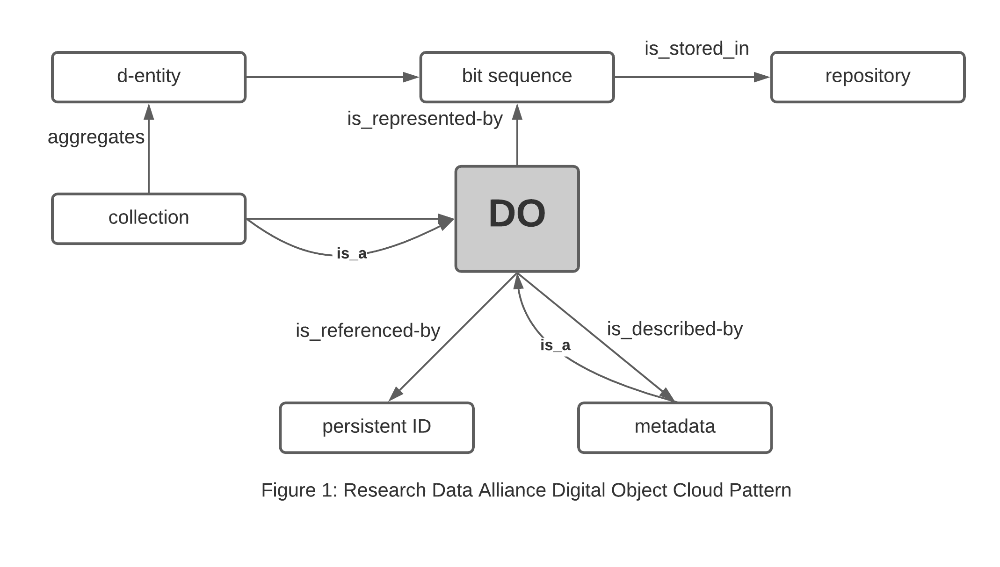

Indexing / Harvesting¶
OIH employs an activity flow is entirely based on web architecture. This means and implementing a harvesting pattern for OIH is an application of these standards.
Once publishers are aligned with this approach any party can implement a indexing service through the further use of these web architecture principles.
The current manner in which information by providers is placed on the net is detailed more in the Publishing patterns for OIH section.
The basics are:
resources containg JSON-LD records are identified by a sitemap by a known provider
web based method GET access for those resources
page content read or optionally rendered via headless browser for those cases where client side javascript based inclusion of the JSON-LD is done
JSON-LD is parsed from the static or rendered HTML
The JSON-LD is leverage for generation of an index
Tools Used in OIH¶
In the case of the OIH architecture the following image defines the set up. The key initial points here are that OIH employs an object store to hold the JSON-LD objects while they are leveraged to generate the index.
This approach has several benefits
Facilitate easier incremental indexing to lighten the network load on provider systems.
Allows multiple processing workflows on the objects without further network traffic (validation, generation of new triples, etc).
Provides an additional route to the data beyond the graph. For some workflows such as ML or analytics an object based store has benefits. For other tasks such as user interface queries, graphs tend to provide better functionality.

Object store pattern¶
Within in the object store the following digital object pattern is used.
This is based on the work of the RDA Digital Fabric working group.

References for key elements¶
Glenaer Compose is a repository for the Docker (Open Container) configurations used for the current OIH portal.
Gleaner: ( https://github.com/earthcubearchitecture-project418/gleaner) A tool for harvesting, validating and indexing structured data on the web.
GROW A program that implements the RDA Digital Object Cloud pattern on top of Amazon S3 API based object stores. It bridges Gleaner and Mercantile to the web.
Options¶
While Gleaner will be used during initial OIH development it is not the only approach. There are many other tools that can be used and might be leveraged in a production environment including:
These different tools may better fit into the workflow and available skill sets for a group.
Indexing¶
At present we index into a graph store. Note the JSON-LD is a graph and what we are doing mostly is collecting, validating and aggregating these graph elements into a usable collection.
There are various potential indexes:
RDF graph from the collected JSON-LD (the default index goal)
Full text index either on the metadata or potentially the associated described resources if available
Spatial index; this can also be done as part of the “graph” if using things like geoSPARQL to encode and search the spatial elements. Alternatively this could be done be extracting those into a geoserver, geohash or other external spatial service
KG completion graph where connections to external graphs are made. Only basic tesdting has been done on this front
Utilization¶
In the end the goal is to provide use of the generated index. There are several possible used for an index.
Web UI such as the reference client at oceans.collaborium.io
A variation on this is the development of web components that can be easily included in domain sites to perform operations on the OIH index
graph access via SPARQL
access to the graph and objects via workflows like Jupyter notebooks